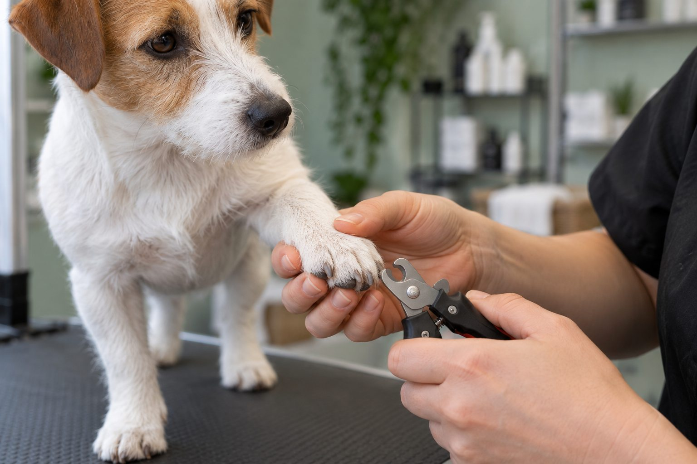

Many dogs need a nail check every two to four weeks; trim when the nails begin to touch the ground or click regularly on hard floors.
Nail growth differs by dog. Pavement walks wear some nails down, while indoor living and softer ground leave others longer. A quick check is more useful than sticking to one date on the calendar.
Signs the nails are ready
Look at your dog standing on a flat surface. Nails that touch the floor, curve noticeably, or catch on fabric may need attention. Frequent clicking while walking is another clue. Remember the dewclaws: they may not touch the ground, so they do not wear down naturally.
Overlong nails can change how a dog places their feet and may split or snag. If a nail is cracked, bleeding, or growing into the pad, contact a veterinarian or groomer rather than trying to fix it by force.
The sound of nails on a hard floor can be a clue, but it is not a perfect ruler. A dog's stance, the shape of the toes, and how quickly the nails grow also matter. Look at the paws while the dog stands naturally. Nails that push a toe upward, curl toward the pad, catch on fabric, or make walking awkward deserve attention. Do not forget the dewclaws, which may not wear down on pavement at all. Check each foot because one nail can grow differently from the others.
Outdoor surfaces do not guarantee that every nail stays short. A dog that mostly walks on grass may have little natural wear; another may wear some front nails but not the rear or dewclaws. Keep a dated photo of the paws from the side if you are unsure whether the length is changing. If a nail is cracked, bleeding, embedded, or painful, ask a veterinarian or experienced groomer for help rather than treating it as a routine trim.
Trim a little at a time
Use sharp dog nail clippers or a grinder your dog tolerates. Hold the paw gently, identify the quick where possible, and remove only a small amount. Dark nails make the quick harder to see, so take tiny cuts and stop if you are uncertain.
Good light and a calm surface help. Keep styptic powder nearby for a minor accidental nick, and ask your veterinarian how to use it. If bleeding is heavy or does not stop, seek veterinary help. A professional can show you a safe technique for your dog's nail color and shape.
Choose a tool that you can control and that suits your dog's nail size. Clippers should cut cleanly rather than crush; a grinder may be easier for small adjustments but its sound can bother some dogs. Good light and a secure, comfortable position are more important than speed. For pale nails, the quick may be visible; dark nails require especially small trims and careful inspection of the cut surface. If you cannot identify a safe stopping point, ask a professional to show you on your own dog.
Set a modest goal, such as touching two paws or shortening one nail, and finish before the dog struggles. Frequent tiny trims can be less stressful than a dramatic session every few months. Keep suitable styptic material available for accidental bleeding and learn how to use it before you need it. If bleeding continues or the dog is very painful, contact a veterinary clinic. Never force a frightened dog to continue just to complete all four feet.

Build cooperation, not a wrestling match
Start by touching a paw, rewarding your dog, and ending the session. On later days, show the tool, touch a nail with it, then trim a single nail. Many dogs do better with several tiny sessions than with all four paws at once.
If your dog is frightened or struggles hard, do not force the issue. A groomer or veterinary team can help and may suggest a cooperative care plan. Consistency and gentle practice can make future trims easier.
Cooperative care begins away from the clipper. Touch a shoulder, then a leg, then briefly a paw, rewarding each relaxed response. Later, hold a toe for a second, show the tool, and let the dog move away after a small success. This gradual sequence teaches predictability. A nonslip mat can help a dog balance while standing, and a calm helper can deliver rewards. Avoid pinning the dog down; fear can make the next attempt harder and increase the risk of a cut.
For a dog with sore joints, consider a position that does not require twisting a limb backward. Some dogs are more comfortable lying on their side; others prefer standing. Ask a veterinarian about pain or mobility concerns if handling has suddenly become difficult. A dog that once tolerated nail care and now resists may be communicating discomfort. Change the setup before assuming the behavior is stubbornness.
Nail check at a glance
| What you notice | What to do next |
|---|---|
| A nail clicks or catches on fabric | Inspect every foot and plan a small, controlled trim. |
| A dewclaw curves toward the skin | Arrange prompt help if it is close to or touching the pad. |
| A nail is split, bleeding, or painful | Contact a veterinarian rather than treating it as routine grooming. |
These observations guide a check; they do not replace a hands-on assessment.
Keep a simple schedule
Check nails weekly and record how long it takes before they need trimming again. Active outdoor dogs may go longer; puppies may need shorter intervals because their nails grow quickly. Reassess the pattern as seasons and activity levels change.
A practical schedule is a check-in, not a fixed command. Look at the paws every week or two and shorten what needs shortening. Young dogs may need more frequent practice because their nails grow quickly, while an older dog's activity and gait can alter wear. Review nail length after a change in walking surface or season. A small calendar note can remind you to inspect without pressuring you to cut nails that are already appropriate.
If you rely on a groomer, ask what length they reached and when the next check would make sense. A dog with very long nails may need repeated gradual trims as the quick recedes; trying to reach an ideal length in one session can cause pain and bleeding. Discuss a staged plan with the professional. Between visits, reward gentle paw handling at home so grooming does not remain a rare, high-pressure event.
Practical details
Why the calendar is only a reminder
A two-to-four-week reminder gets you to look at the paws; it should not force you to cut a nail that is already short. Active dogs on abrasive ground may wear some nails naturally, while dogs walking on grass may not. Breed, age, gait, and season also affect wear. A dog with one injured leg may place weight differently and wear nails unevenly.
Check with the dog standing on a level floor. Look at the nail's position relative to the surface, then check the dewclaws separately. Do not use the sound test alone on a floor where tags or other objects click. If the nails curve into the pad, have a veterinarian or groomer handle the problem rather than attempting a large cut at home.
What different nail clues suggest
| Situation | Practical response |
|---|---|
| Nails click on a hard floor | Check each paw soon; regular clicking often means at least some nails are ready for a small trim. |
| One nail catches on fabric | Inspect that nail and the dewclaws for excess length or a split before trimming. |
| Dog pulls a paw away | Pause. Sensitivity may reflect fear, a sore toe, or a previous unpleasant trim. |
| Nails look short after walks | Still check dewclaws and individual nails, which do not wear evenly on pavement. |
Choosing a clipper or grinder
Clippers are quick but require a steady hand and small cuts. A grinder removes material gradually, which can help with dark nails, but its noise and vibration bother some dogs. Neither tool is automatically safer. Keep the tool sharp or well maintained, work in good light, and have another person offer rewards only if the dog remains comfortable.
With dark nails, stop often and examine the cut surface rather than guessing where the quick ends. A professional demonstration is useful if you are new to trimming. Do not push through trembling, growling, or a dog trying to escape. The better goal is one successful nail today and another tomorrow, not a perfect set completed by force.
If you cut too far
A small nick can bleed more than expected and may make the dog wary. Apply gentle pressure and a suitable styptic product according to its instructions. Stay calm and stop the session. Call a veterinarian if bleeding continues, the nail is torn, or the dog is in significant pain. Do not cover a damaged nail with a tight bandage without professional direction.
For future sessions, shorten the interval so each trim removes less. Pair paw handling with treats outside the trimming context. A written log of which nails were done can prevent unnecessary repeated handling. The aim is comfortable feet and a dog who trusts the process, not nails cut to an arbitrary visual length.
Imagine a dog whose front nails click after winter walks moved from pavement to a soft trail. The owner might assume the weekly mileage is unchanged, yet the surface no longer wears the nails. A quick inspection shows one dewclaw beginning to curl. The useful response is to trim conservatively, check the other feet, and repeat the inspection after a short interval. It is not necessary to wait for every nail to become visibly long.
After a trim, watch how the dog walks and whether it licks a particular toe. A brief look for a rough edge or accidental cut can catch a problem early. If the dog limps, bleeds again, or a nail splits toward the base, seek veterinary advice. Record what tool, position, and reward worked best. The safest routine is one the dog can tolerate regularly, because regular small adjustments prevent the difficult rescue trim.
Pay attention to the dewclaws during every inspection. Because they may not touch the ground, they can curve toward the skin even when other nails look acceptable. Check for a nail snagged in fur or bedding and for a dog repeatedly licking one toe. If you discover an ingrown or badly broken nail, seek veterinary care rather than cutting blindly. The pain and risk of further injury make it different from routine maintenance. Bring a photo if the dog will not allow a close look at home.
For maintenance, use a brief, repeatable setup: the same nonslip spot, a familiar reward, and one small trimming goal. Stop after success rather than pushing until the dog pulls away. Keep a record of which nails were shortened if you do not finish every foot at once. If a professional does the work, ask them to show you the appropriate length and how they recognize the quick. That practical demonstration can make later home checks more confident. A gradual schedule protects both paw comfort and the dog's willingness to cooperate.
Make nail care easier to maintain
The most useful schedule is one you can repeat calmly. Check the front paws, back paws, and dewclaws during a weekly handling session, because they may wear at different rates. A dog that walks mostly on soft ground may need attention sooner than one that regularly walks on pavement. Notice whether nails touch the floor while your dog stands naturally, and whether a nail curves toward a pad.
If your dog is worried about clippers, separate training from trimming. Let the dog see the tool, reward voluntary paw contact, and end before anxiety rises. On another day, try one small trim and reward again. Short sessions protect the relationship and can be safer than trying to finish every nail in one sitting. Ask a veterinarian or experienced groomer to demonstrate where to cut when nails are dark or overgrown.
Continue exploring
For a broader routine, read How Often Should You Bathe Your Dog?, How to Clean Your Dog's Ears Safely at Home, and How to Brush a Dog's Coat Without Pulling.
Frequently Asked Questions
What if I cut the quick?
Apply gentle pressure and an appropriate styptic product. Contact your veterinarian if bleeding persists or your dog is very distressed.
Can I file instead of clip?
A pet nail grinder can work well if your dog accepts its sound and vibration. Introduce it slowly.
Do walks trim dog nails naturally?
Hard surfaces can wear some nails, but dewclaws and individual nails may still need trimming.
Editorial references
These resources informed the general guidance in this article. They do not replace advice tailored to your pet.
This guide offers general information. Your pet’s age, health, and history may call for a different plan. For medical concerns, ask your veterinarian.